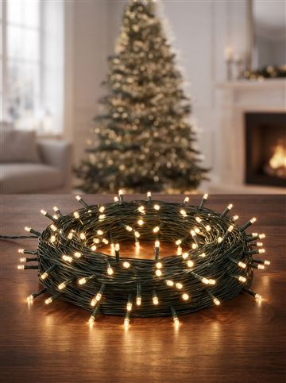

Árvore de Natal completa barata: 3 opções que chegam rápido
#publi — Os botões são links de afiliado do Mercado Livre: posso ganhar uma comissão, sem custo extra pra você. Preço e prazo mudam: confira no anúncio.
Quer uma árvore de Natal completa e barata, sem comprar cada enfeite separado? Comparei as opções que mais vendem no Mercado Livre e separei 3 caminhos: a mais barata, a mais bonita e a que já serve pra quem tem enfeite em casa.
💰 Mais barata: árvore 1,50 m que já vem com enfeites, pisca e estrela.
🌟 Mais bonita: árvore 2,10 m + kit 100 bolas + 3 piscas (tudo FULL).
🌲 Só a árvore: 2,10 m com 1000 galhos.
Comparativo: qual árvore de Natal escolher
| Opção | Tamanho | O que vem | Entrega | Pra quem |
|---|---|---|---|---|
| Árvore completa 1,50 m | 1,50 m · 400 galhos | Árvore + enfeites + pisca + estrela | FULL | Quer gastar pouco |
| Montar a 2,10 m | 2,10 m · 1200 galhos | Peças separadas | FULL | Quer árvore grande e cheia |
| Árvore 2,10 m 1000 galhos | 2,10 m · 1000 galhos | Só a árvore | FULL | Já tem enfeites |
1. A mais barata: árvore de 1,50 m completa

Árvore 1,50 m + enfeites + pisca + estrela
Tudo num pedido só: árvore de 400 galhos, mais de 60 enfeites variados, pisca de 100 LEDs e a estrela.
- ✅ Um frete só
- ✅ Entrega FULL
- ⚠️ Pé de plástico
- ⚠️ Pisca não é bivolt: escolha 110 V ou 220 V
2. A mais bonita: monte a árvore de 2,10 m (tudo FULL)
Pra árvore grande e cheia de foto, compre as peças separadas — escolhendo FULL, chega rápido.

Árvore 2,10 m · 1200 galhos
Base de metal, nota 4,9. Vem sem luzes e sem enfeites.
Ver preço no Mercado Livre
Pisca-pisca 100 LEDs branco quente (use 3)
Fio verde, 9,5 m, 8 funções. Escolha 127 V ou 220 V.
Ver preço no Mercado Livre
Kit 100 bolas + estrela
Bolas vermelhas lisas, foscas e glitter, já com a estrela ponteira.
Ver preço no Mercado Livre3. Só a árvore grande: 2,10 m com 1000 galhos

Árvore 2,10 m · 1000 galhos
Pra quem já tem enfeites guardados e só quer trocar a árvore.
Ver preço no Mercado LivreDicas pra árvore ficar bonita
Abra galho por galho: a árvore vem compactada. Pisca primeiro, enfeite depois, de dentro pra fora. Uma paleta só (vermelho + dourado) deixa com cara de loja. Pra 2,10 m: 3 piscas e uns 100 enfeites.
Perguntas frequentes
Qual árvore de Natal completa é mais barata?
A de 1,50 m que já vem com enfeites, pisca e estrela num pedido só. Confira o preço do dia no link.
Quantos pisca-piscas precisa pra árvore de 2,10 m?
Uns 300 LEDs, ou seja, 3 cordões de 100.
Árvore FULL chega antes do Natal?
FULL costuma ser rápido, mas o prazo depende do CEP: confira no anúncio.
Leia também
- Presentes de Natal até R$ 50: 8 ideias que todo mundo gosta
- Presente de amigo secreto barato: ideias de R$ 20 a R$ 50
- Presente de Natal pra mãe: ideias que ela vai usar
Mais achadinhos na nossa página de ofertas.